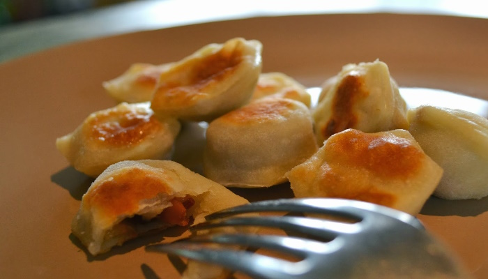

Praetud pelmeenid
Ideaalne retsept laisale, vaesele ja/või pohmas tudengile. Kiired, lihtsad ja maitsvad pelmeenid ootavad
söömist!

Kõik asjad on olemas!
Valmistamine:
- Pane pann pliidile ja lase tal keskmise kuumuse pea soojaks minna
- Lisa pannile törts õli ning lase sel soojeneda kuniks ta on voolav ja kattab kogu panni ühtlase õhukese
kihina
- Lisa pannile pelmeenid
- Lase pelmeenidel praadida, vahepeal sega, kuniks pelmeenid on kuldpruunid
- Lisa pannile silma järgi sorts vett
- Sega pelmeene vees, kuniks vesi on pannilt ära auranud
- Transpordi pelmeenid kaussi või söö otse pannilt vabalt valitud kastmega (soovitame hapukoort)